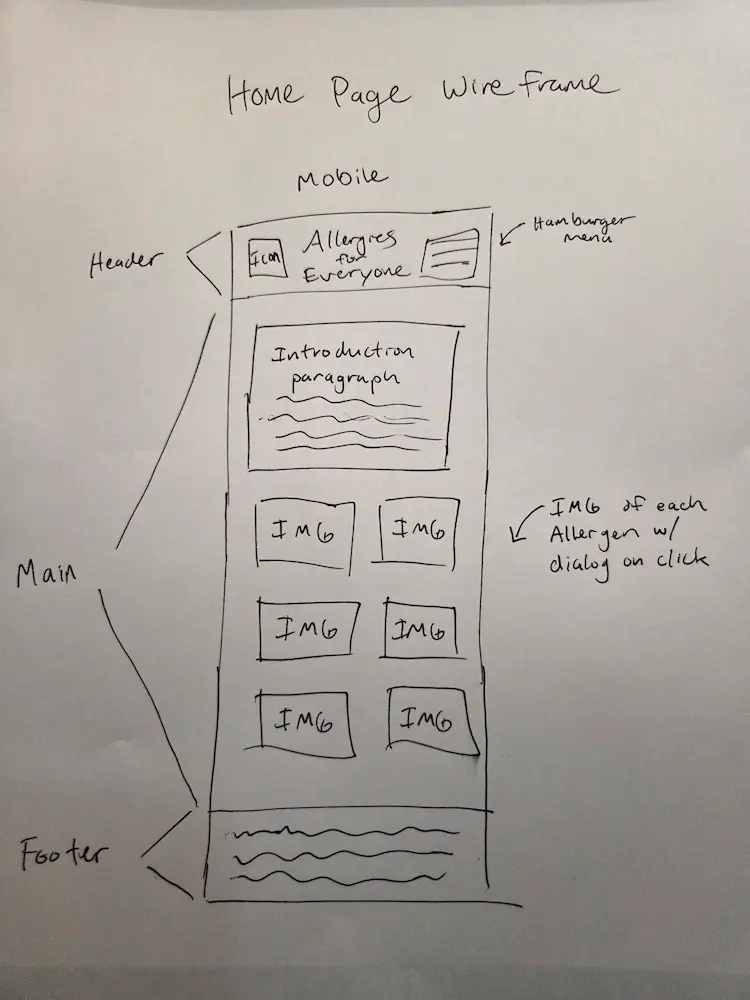
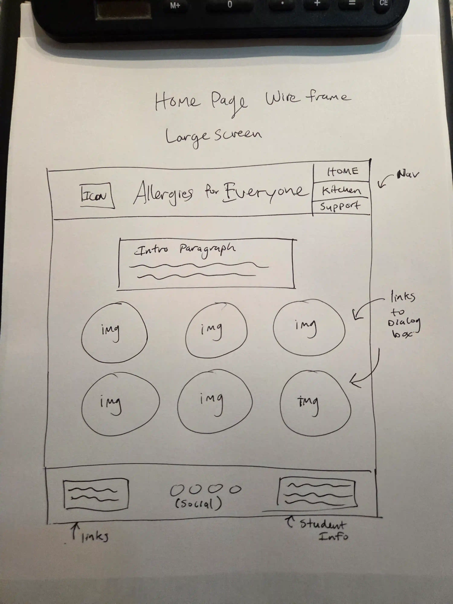

WDD 231 Final Project Site Plan Michael Thomas
Site Name: “Allergies for Everyone” I chose this name because I believe it feels inviting and inclusive. I want the site to feel welcoming to those with or without allergies. Everyone can learn something from this site.
Site Purpose: This site provides information about the top 6 food allergies. It will also contain helpful links for allergy-friendly suppliers, info on food substitutes, a newsletter sign-up form, and listings for local events.
Scenarios: -I really like this dish that contains milk. What can I use instead while maintaining the flavor profile? -My friend just told me that he is allergic to peanuts. I really want to know more about peanut allergies now so I can know how to cook or eat out with my friend.
Color Scheme: --text-color: #000000; --primary-color: #95D5B2; --secondary-color: #2D6A4F; --tertiary-color: #FAF3E0; --highlight-color: #D4A373;
Typography: “IBM-Plex” for everything. I like keeping the font consistent throughout.
Wireframe:

